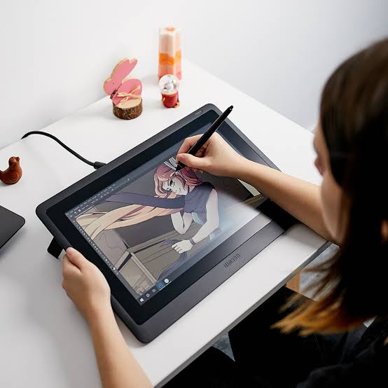

Overview

Digital art is beautiful, but it can be quite intimidating when you first start. Digital Art Crash Course is here to provide resources and tips for how you can get started and take your first steps into digital art.
Getting Started
The easiest way to get started is to find a tablet and drawing software that you like.
(refer to Hardware & Software for more information)
Once you have those selected, you'll want to get familiar with your tablet and drawing program.
For example you can:
- Watch tutorials
- Explore settings and tools on your own
- Set up your layout and brushes
- Learn keyboard shortcuts for your drawing program
Drawing
Once you have everything set up the way you like, you can then start drawing.
You can draw in any way you like, so when you're getting started, experiment
with different brushes and canvas sizes until you find a combination that
you like. Keep in mind that if you end up not liking something, you can change
it later, and there are many tutorials available online to help you with that
process. As long as you're having a good time while you're drawing, you should
be ready to take off from there.
Happy drawing!
Digital Art Crash Course
930 S 500 E
Heber City, UT
123-456-7890